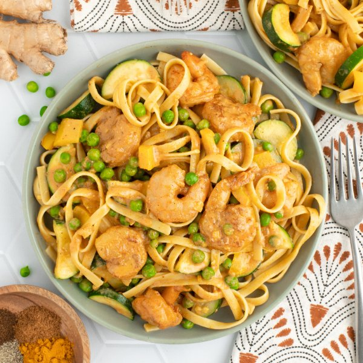

Shrimp Fettuccine with "Tikka Masala" Sauce, Zucchini, Peppers & Peas

Nutrition (per serving)
682.4 kcalCalories
40.2 gProtein
83.2 gCarbs
22.5 gFat
Full nutrition table
| Calories | 682.4 kcal |
| Total fat | 22.5 g |
| Saturated fat | 13.8 g |
| Trans fat | 0.4 g |
| Cholesterol | 255.1 mg |
| Sodium | 1048 mg |
| Carbohydrates | 83.2 g |
| Fiber | 9.3 g |
| Sugars | 18.9 g |
| Protein | 40.2 g |
| Potassium | 1470.1 mg |
| Calcium | 210.9 mg |
| Iron | 4.5 mg |
| Vitamin A | 1822.6 IU |
| Vitamin C | 161.5 mg |
| Vitamin D | 11.4 IU |
Cookware
Ingredients
- 10 ozfettuccine pasta
- 1 cupfrozen peas
- 4 clovesgarlic
- 2 (1 inch) piecesginger root
- 4 fl ozheavy whipping cream
- 1 ½ lbraw peeled shrimp, fresh or frozen
- 2 (8 oz) canstomato sauce
- 2yellow bell peppers
- 1 mediumyellow onion
- 4 mediumzucchini squash
- black pepper
- brown sugar
- chili powder
- garam masala
- salt
- turmeric, ground
- virgin coconut oil
Steps
- Fill a large pot halfway with hot water (from the tap); cover and bring to a boil over high heat. Uncover, add salt and pasta, and stir for a few seconds. Cook until desired firmness, 8-10 minutes. Reserve 1 cup of cooking water before draining; set aside.1 tsp salt
10 oz fettuccine pasta - Meanwhile, wash and dry the fresh produce.2 yellow bell peppers
4 medium zucchini squash
2 (1 inch) pieces ginger root - If using frozen shrimp, place them in the colander and run under cold water to thaw them slightly and remove any ice crystals. (If using fresh shrimp, skip this step.) Place the shrimp on a clean towel or paper towels and pat dry.1 ½ lb raw peeled shrimp, fresh or frozen
- Peel, halve, and small dice onion; trim, seed, and medium dice bell peppers. Place both in a large bowl.1 medium yellow onion
- Trim and halve zucchini, then cut crosswise into ¼-inch thick half-moons; add to the bowl with the other veggies.
- Preheat a large skillet over medium-high heat.
- Once the skillet is hot, add oil and swirl to coat the bottom. Add veggies and cook, stirring occasionally, until softened, 4-5 minutes. (Reserve bowl for the next step.)2 tbsp virgin coconut oil
- Meanwhile, place sugar and spices in the reserved bowl; stir to combine the spice mix.1 tsp brown sugar
2 tsp garam masala
2 tsp chili powder
1 ½ tsp salt
1 tsp black pepper
½ tsp turmeric, ground - Peel and mince ginger and garlic; add both to the bowl with the spice mix, along with the shrimp, and toss to coat.4 cloves garlic
- When the veggies are soft, add seasoned shrimp to the skillet; continue to cook, stirring occasionally, until shrimp are just starting to turn opaque, 1-2 minutes.
- Add tomato sauce, peas, and cream to the skillet; stir to combine and bring to a simmer. Once simmering, reduce heat to low and continue to cook until shrimp are cooked through, 2-3 minutes more.2 (8 oz) cans tomato sauce
1 cup frozen peas
4 fl oz (½ cup) heavy whipping cream - Transfer drained pasta to the skillet and toss to combine; add reserved pasta water, a few tablespoons at a time, if necessary, to reach a saucy consistency. Remove from heat.
- To serve, divide pasta between plates or bowls. Enjoy!